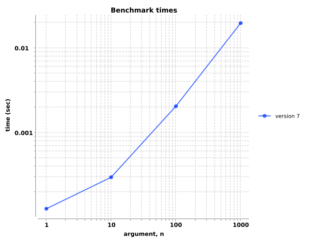
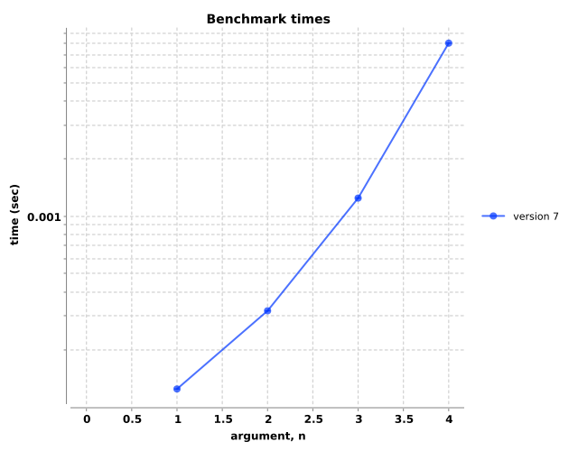
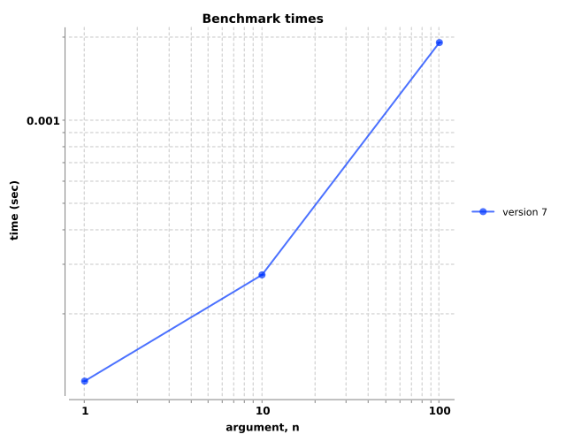
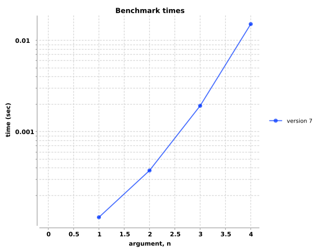
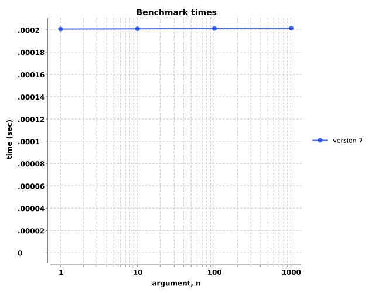
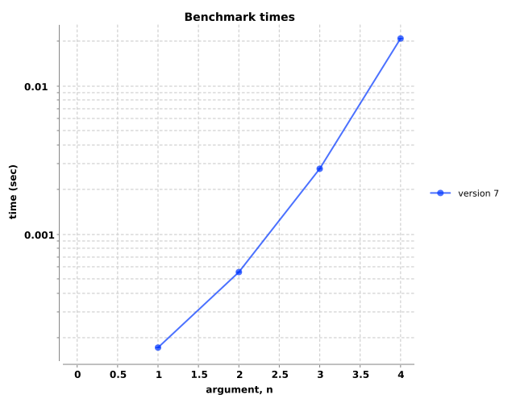
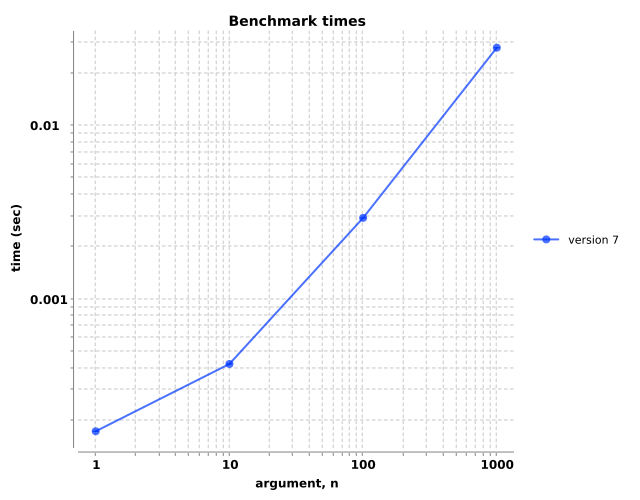

Hashmaps
Hashmaps comments...
(fn [n] (valid-collections? (map-of-n-key-vals n) (map-coll-spec n)))
| arg, n | ||||
|---|---|---|---|---|
| version | 1 | 10 | 100 | 1000 |
| 7 | 1.2e-04±1.6e-07 | 2.9e-04±5.6e-07 | 2.0e-03±2.6e-06 | 1.9e-02±4.3e-05 |
(fn [n] (valid-collections? (nested-map n) (nested-map-coll-spec n)))
| arg, n | ||||
|---|---|---|---|---|
| version | 1 | 2 | 3 | 4 |
| 7 | 1.2e-04±2.0e-07 | 3.2e-04±6.4e-07 | 1.2e-03±3.0e-06 | 8.0e-03±1.7e-05 |
Lists
Lists comments...
(fn [n] (valid-collections? (list-of-n-rand-ints n) (list-coll-spec n)))
| arg, n | |||
|---|---|---|---|
| version | 1 | 10 | 100 |
| 7 | 1.1e-04±2.2e-07 | 2.7e-04±5.2e-07 | 1.9e-03±7.5e-06 |
(fn [n] (valid-collections? (nested-list n) (nested-list-coll-spec n)))
| arg, n | ||||
|---|---|---|---|---|
| version | 1 | 2 | 3 | 4 |
| 7 | 1.1e-04±1.7e-07 | 3.7e-04±5.5e-07 | 1.9e-03±4.2e-06 | 1.5e-02±2.1e-05 |
Sequences
Seq comments...
(fn [n] (valid-collections? (nested-seq n) (nested-seq-coll-spec n)))
![Benchmark measurements for expression `(fn [n] (valid-collections? (nested-seq n) (nested-seq-coll-spec n)))`, time versus 'n' arguments, comparing different versions.](img_valid_collections/group-2-fexpr-0.svg)
| arg, n | ||||
|---|---|---|---|---|
| version | 1 | 2 | 3 | 4 |
| 7 | 2.0e-04±3.3e-07 | 3.7e-04±8.4e-07 | 1.9e-03±6.5e-06 | 1.5e-02±1.7e-05 |
(fn [n] (valid-collections? (seq-of-n-rand-ints n) (seq-coll-spec n)))
| arg, n | ||||
|---|---|---|---|---|
| version | 1 | 10 | 100 | 1000 |
| 7 | 2.0e-04±3.6e-07 | 2.0e-04±3.2e-07 | 2.0e-04±2.9e-07 | 2.0e-04±3.1e-07 |
Vectors
Vectors comments...
(fn [n] (valid-collections? (nested-vec n) (nested-vec-coll-spec n)))
| arg, n | ||||
|---|---|---|---|---|
| version | 1 | 2 | 3 | 4 |
| 7 | 1.7e-04±3.1e-07 | 5.6e-04±1.1e-06 | 2.8e-03±4.6e-06 | 2.1e-02±3.4e-05 |
(fn [n] (valid-collections? (vec-of-n-rand-ints n) (vec-coll-spec n)))
| arg, n | ||||
|---|---|---|---|---|
| version | 1 | 10 | 100 | 1000 |
| 7 | 1.7e-04±2.5e-07 | 4.2e-04±8.7e-07 | 2.9e-03±3.6e-06 | 2.8e-02±3.3e-05 |